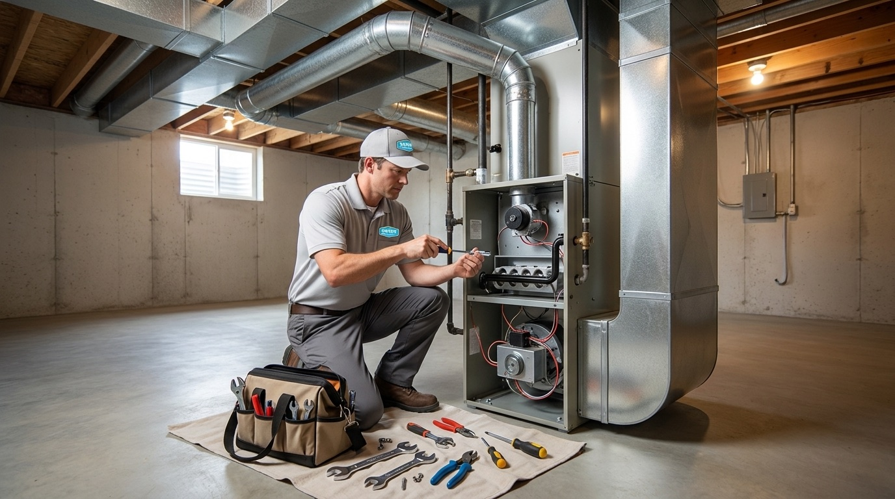
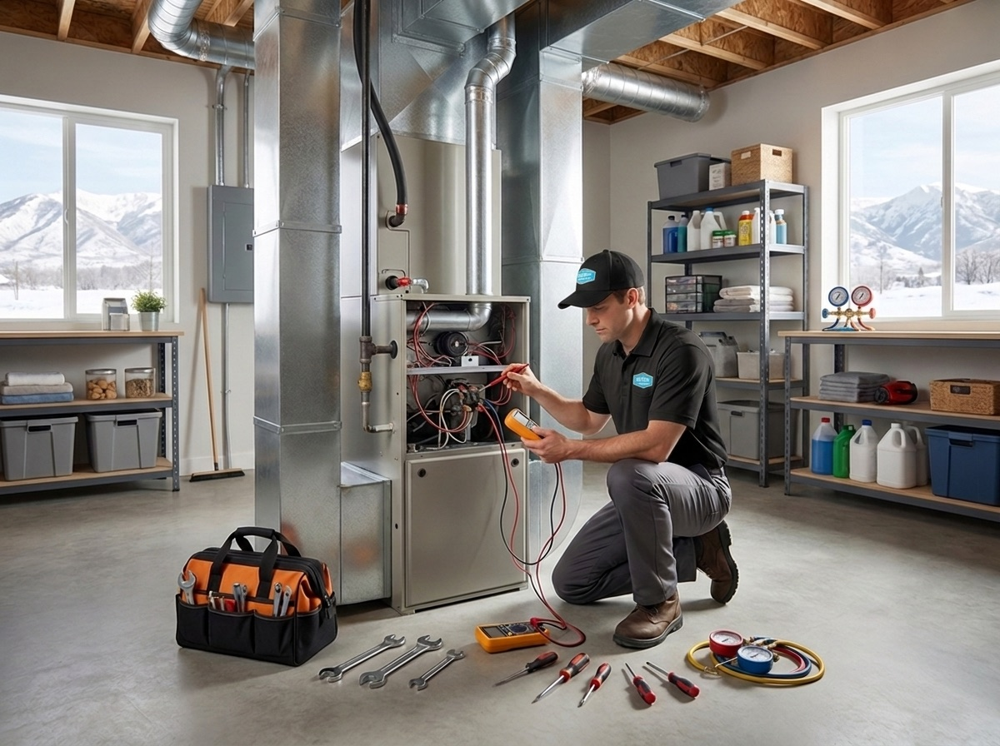

801.887.9650


Temperatures in the Salt Lake Valley regularly dip into the teens and single digits from December through February, so when the furnace in your Utah home stops working, you feel it fast. Sunny Home Services offers furnace repair for West Jordan homes with same-day appointments, upfront flat-rate pricing, and technicians who know exactly what it takes to keep a Wasatch Front home warm.
We're a locally owned company built for the way Utah families actually live. Whether you're dealing with a furnace that won't kick on during a cold snap or a system making sounds it definitely shouldn't, our team is ready to help.

West Jordan sits at an elevation of over 4,370 feet, and its housing stock reflects decades of rapid growth. The city expanded quickly through the '80s, '90s, and 2000s, so a large share of homes have furnaces over 20 to 30 years old and are approaching or past their expected service life. Our furnace repair technicians see a predictable mix of issues in this market.
Cracked heat exchangers are one of the most common and most serious problems in older West Jordan homes. A cracked heat exchanger can allow combustion gases, including carbon monoxide, to enter the home's air supply under certain operating conditions, making immediate professional inspection essential.
Modern furnaces use hot surface ignitors instead of standing pilot lights, and these components wear out over time. A furnace that clicks but won't fire, or one that starts and shuts off before reaching temperature, often has an ignitor that's on its way out.
West Jordan's location near the Salt Lake Valley floor means the area sees some of the worst air quality days in the state, particularly during winter inversions. Homeowners who don't change their filters frequently enough during these stretches put extra strain on their blower motors and heat exchangers.
A furnace that turns on and off every few minutes, rather than completing a full heating cycle, wastes energy and wears out faster. Short cycling has several causes, including oversized equipment, dirty filters, flame sensor issues, and blocked flue pipes.
West Jordan winters don't leave much margin for error. When temperatures drop below freezing, an underperforming furnace can go from an inconvenience to an urgent problem in hours. Here are the signs that you need to call for furnace repair right away:
Cold air often settles across the Salt Lake Valley during winter inversions. As a result, neighborhoods closer to the western foothills may experience colder overnight temperatures than surrounding areas. Don't wait on any of the symptoms above. Call us, and we'll get someone out the same day.
Sunny Home Services handles natural gas furnace repair and electric furnace repair across West Jordan and the surrounding communities. Our technicians are trained on all major equipment types, including single-stage, two-stage, and variable-speed systems, as well as heat pumps and dual-fuel setups.
We carry parts for and service all major brands, including:
Whether your system is a 15-year-old single-stage gas furnace in a 1990s-era West Jordan subdivision or a newer high-efficiency unit in one of the city's more recent developments near Mountain View Corridor, we have the tools and parts to get it running.
From your first call to the moment our technician leaves your driveway, the process is designed to be easy and transparent. Unlike some companies that fix furnaces only during normal business hours, Sunny Home Services offers same-day appointments throughout West Jordan. When you schedule furnace repair with us, you can expect:
Finding furnace repair companies in West Jordan means sorting through national chains that treat your home like a service ticket and small operators who can't always show up when you need them. Sunny Home Services was built specifically to be the better option.
We combine the speed, systems, and professionalism of a large company with the honesty and accountability of a genuinely local one. With over 30 years of combined industry experience on our team, we've seen every furnace problem West Jordan can throw at us.
As a Northern Utah company serving the Wasatch Front, our technicians understand the specific demands that Salt Lake Valley winters put on residential heating systems. We're not managing your neighborhood from a call center in another state. We're your neighbors, and we stand behind every job with a 100% satisfaction guarantee.


A heating system problem can turn into an emergency furnace repair in West Jordan faster than most homeowners expect. Sunny Home Services offers same-day furnace repair with upfront pricing, and our technicians are ready to help. Contact us today to book your appointment. We'll be in touch quickly, and we'll have your heat back on before the temperature drops again.